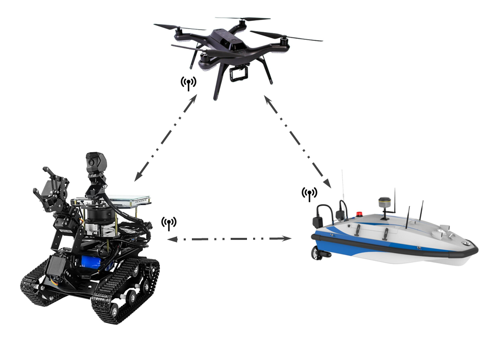
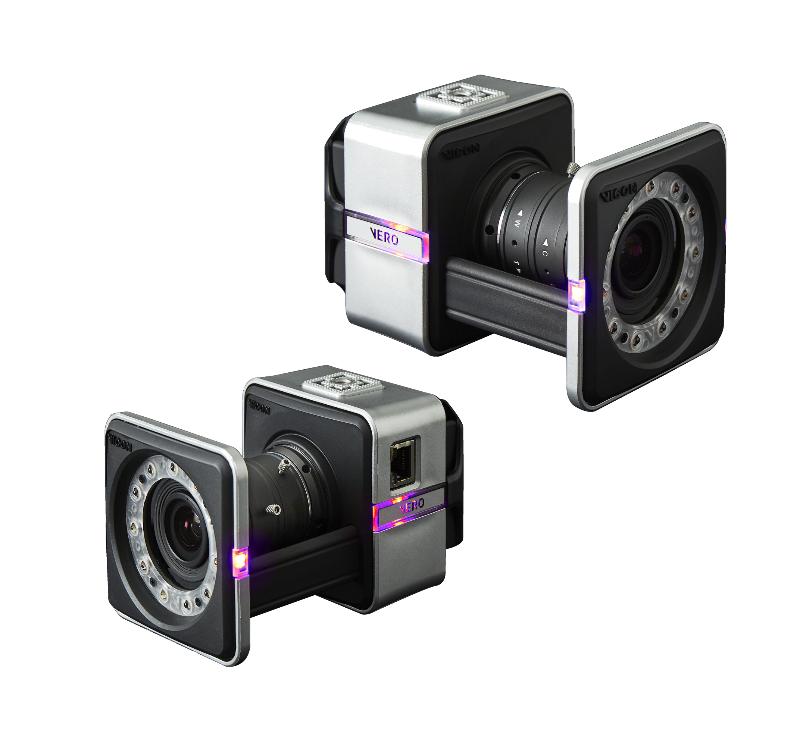
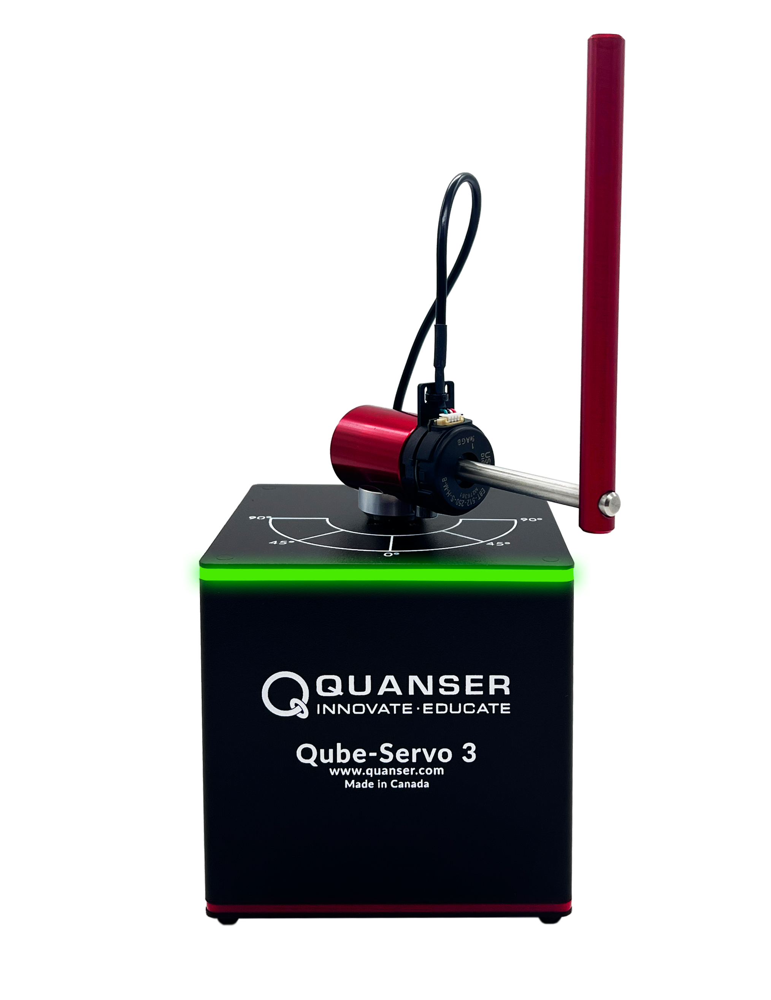
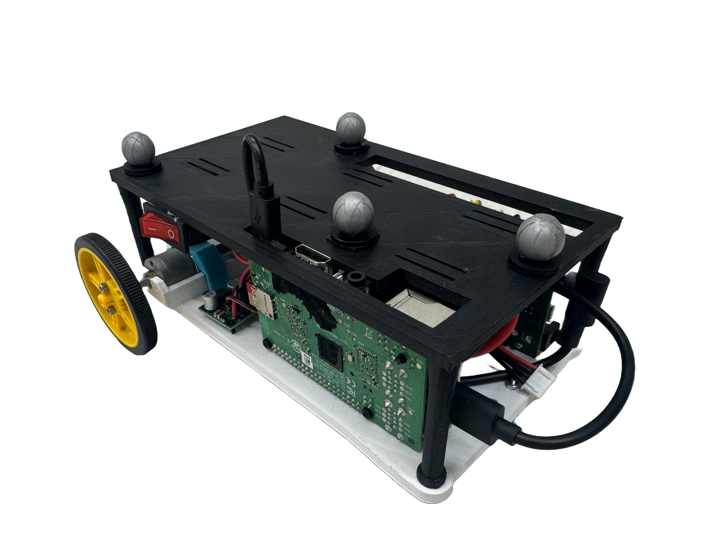
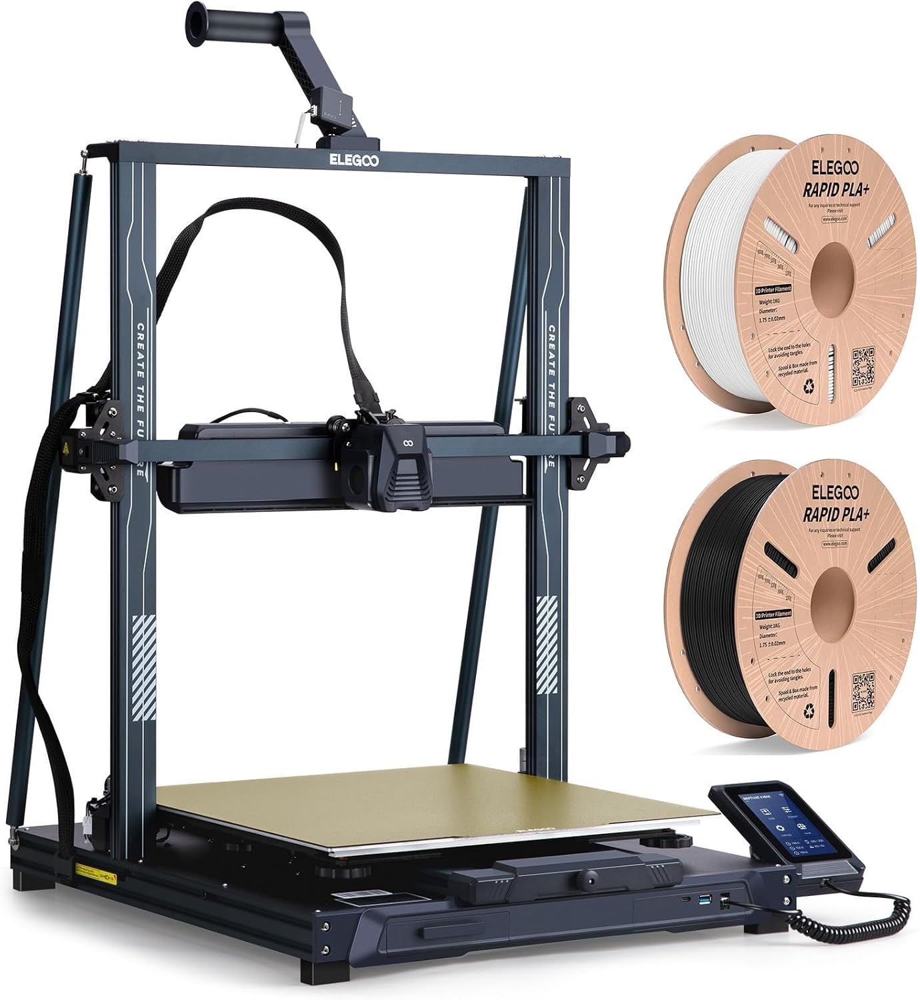
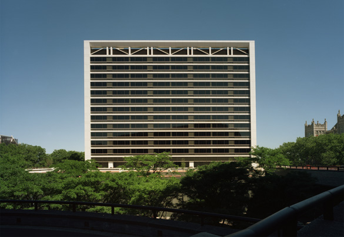

|
Autonomous Systems and Control Laboratory (ASCL)
|
 |
The Autonomous Systems and Control Laboratory (ASCL) is part of the Department of Mechanical Engineering at The City College of New York. The laboratory conducts theoretical and experimental research in nonlinear control, robotics, and autonomous systems.
Our research seeks to develop rigorous and implementable control methods that enable robotic and autonomous systems to operate safely and effectively under nonlinear dynamics, limited actuation, sensing constraints, and interactions with other agents and the environment.
Current research interests include:
Safety-critical control and autonomous systems
Extremum seeking and source seeking
Nonholonomic and underactuated robotic systems
Networked and multi-agent autonomous systems
Nonlinear and distributed control
Learning- and optimization-based control
The laboratory is directed by Bo Wang, Assistant Professor of Mechanical Engineering at CCNY.
Research Overview | Lab Members | Opportunities | Publications
|
Laboratory
The Autonomous Systems and Control Laboratory provides experimental facilities for research and education in nonlinear control, robotics, and autonomous systems. The laboratory features a 12-camera Vicon motion capture system, Quanser control and mechatronics platforms, differential-drive mobile robots, and facilities for robotic prototyping and fabrication. The robotic platforms incorporate onboard computing and sensing technologies, including Raspberry Pi, Arduino systems, and LiDAR sensors, and are used for the implementation and experimental validation of control algorithms in areas such as motion control, source seeking, safety-critical control, navigation, and multi-robot coordination.
 |  |  |  |
|
Vicon Motion Capture System | Quanser QUBE-Servo 3 | Student-Built Mobile Robots | Robotic Prototyping and Fabrication
|
Location
|
 |
Autonomous Systems and Control Laboratory
Department of Mechanical Engineering
The City College of New York
Marshak Science Building, Room 705
160 Convent Avenue
New York, NY 10031
|
Contact
Laboratory Director
Bo Wang
Assistant Professor of Mechanical Engineering
The City College of New York
Email: bwang1@ccny.cuny.edu
Office Phone: +1 (212) 650-5204
|